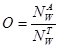
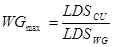
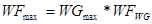
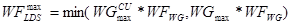
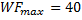
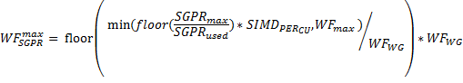

Kernel Occupancy¶
This page provides an overview of the kernel occupancy calculation, providing the definition of the parameter and discussing the factors influencing the value and its interpretation.
Kernel occupancy is a measure of the use of the resources of a compute unit on a GPU, the use being measured by the number of in-flight wavefronts, for a given kernel, relative to the number of wavefronts that can be launched given the ideal kernel dispatch configuration (dependent on the work-group size and resource use in the kernel).
The number of wavefronts that are scheduled when a kernel is dispatched is constrained by three significant factors:
- the number of general purpose registers (GPR) required by each work-item,
- the amount of shared memory (LDS for local data store) used by each work-group, and
- the configuration of the work-group (the work-group size).
The basic definition of the occupancy (O) is given by:
where NWA is the number of in-flight wavefronts on the compute unit, and NWT is the theoretical number of wavefronts that the compute unit can execute concurrently.
The first constraint is that work that is assigned to a compute unit is scheduled as groups of individual work-items, called wavefronts, which have a fixed size defined by the hardware. The characteristic of a wavefront is that each work-item executes in step with the other work-items in the wavefront. The number of work-items that can be executed on a compute unit must be a multiple of a wavefront. In an ideal situation, the number of wavefronts that can be scheduled corresponds to the maximum number of wavefronts supported by the compute unit.
However, because there are resources that are shared among work-groups, which is the basic unit of processing on the compute unit, wavefronts are scheduled as part of a work-group. A work-group consists of a collection of work-items that make use of a common block of local data storage (LDS) that is shared among the members of the work-group, as well as registers. Each work-group consists of one or more wavefronts. Thus, the total number of wavefronts that can be launched on a compute unit is also constrained by the number of work-groups as this must correspond to an integral number of workgroups, even if the compute unit has capacity for additional wavefronts. In the ideal situation, the number of wavefronts that can be launched is an integral multiple of the number of wavefronts per work-group, which means that the maximum number of wavefronts the GPU is capable of allocating, can be achieved. When this is not the case, changing the size of the work-items in the work-group can change the number of wavefronts in the work-group.
Kernel Occupancy for AMD Radeon™ HD 5000/6000 Series Based on VLIW5/VLIW4 Architecture¶
1. LDS limits on the number of in-flight¶
In the case that the LDS is the only constraint on the number of in-flight wavefronts, the compute unit can support the launch of a number of in-flight work-groups given by:
where WGmax is the maximum number of work-groups on a compute unit, LDSCU is the shared memory available on the compute unit, and LDSwg is the shared memory required by the work-group (based on the resources required by the kernel). The corresponding number of wavefronts is given as:
where WFmax is the maximum number of wavefronts, WGmax is the maximum number of work-groups, and WFWG is the number of wavefronts in a work-group.
There is also another constraint whereby a compute unit can only support a fixed number of work-groups, a hard limit of WGmax=8 (denoted by WGmaxCU). This also limits the effectiveness of reducing the work-group size excessively, as the number of wavefronts is also limited by the maximum workgroup size. Currently, the maximum work-group size is 256 work-items, which means that the maximum number of wavefronts is 4 when the wavefront size is 64 (and 8 when the wavefront size is 32).
Thus, when the only limit to the number of wavefronts on a compute unit is set by the LDS usage (for a given kernel), then the maximum number of wavefronts, (LDS-limited) is given by:
2. GPR limits on the number of in-flight wavefronts¶
Another limit on the number of in-flight wavefronts is the number of general-purpose registers (GPRs). Each compute unit has 16384 registers. These are divided among the work-items in a wavefront. Thus, the number of registers per work-item limits the number of wavefronts that can be launched. This can be expressed as:
where Nreg is the number of registers per work-item; the superscripts max and used refer to the maximum number of registers per thread and the actual number of registers used.
The number of in-flight wavefronts being constrained by the work-group granularity, the number of GPR-limited wavefronts is given by:
3. Other constraints¶
Another limit on the number of in-flight wavefronts is the FCStack; however, this is really an insignificant constraint, so this is not considered here.
The final factor in the occupancy is the work-group size, as briefly discussed above. If there are no other constraints on the number of wavefronts on the compute unit, the maximum number of wavefronts is given by:
where WFmaxCU is the maximum number of wavefronts on the compute unit and WFWGmax is the maximum number of wavefronts on a compute unit when there are no other constraints than the work-group size.
This equation shows that having a workgroup size where the number of wavefronts divides the maximum number of wavefronts on the compute unit evenly generally yields the greatest number of in-flight wavefronts, while at the same time indicating that making the work-group size too small yields a reduced number of wavefronts. For example, setting a workgroup consisting of only 1 wavefront yields only 8 in-flight wavefronts, whereas (for example, given a maximum number of wavefronts on the compute unit of 32), a work-group of 2 wavefronts will yield 16 wavefronts. Furthermore, having a single wavefront per work-group doubles the LDS usage relative to having 2 wavefronts per work-group as the LDS is only shared among the wavefronts in a same work-group (but not between work-groups).
Given these constraints, the maximum number of in-flight wavefronts is given by:
Thus, the occupancy, O, is given by:
The occupancy shown here is the estimated occupancy on a single compute unit. It is independent of the work-loads on the other compute units on the GPU because the occupancy is only really meaningful if there are sufficient work-items to require all the resources of at least one compute unit (and even then, ideally, there should be a sufficient work-load to ensure that more than one compute unit is needed to execute the work in order to gain the benefits of parallel operations). Higher occupancy allows for increased global memory latency hiding as it allows wavefronts to be swapped when there are global memory accesses. However, once there is a sufficient number of wavefronts on the compute unit to hide any global memory accesses, increasing occupancy may not increase performance.
Kernel Occupancy for AMD Radeon™ HD 7000 Series or Newer, Based on Graphics Core Next Architecture¶
There are a number of significant differences from the previous occupancy calculation due to the different architecture. In the Graphics Core Next architecture, each compute unit is actually made up of four SIMDs. While some features, such as the GPRs, are still computed on the basis of individual SIMDs, these must be scaled to the whole compute unit. On the other hand, work-group limits must be computed over the whole compute unit. These are detailed below.
The first limit to the number of active wavefronts on the compute unit is the work-group size. Each Compute unit (CU), has up to 40 slots for wavefronts. If each work-group is exactly one wavefront, then the maximum number of wavefronts is:
Otherwise, if there is more than one wavefront (WF) per work-group (WG), there is an upper limit of 16 work-groups (WG) per compute unit (CU). Then, the maximum number of wavefronts on the compute unit is given by:
where WFWG is the number of wavefronts per work group.
The second limit on the number of active wavefronts is the number of VGPR per SIMD.
Where VGPRmax is maximum number of registers per work-item and VGPRused is the actual number of registers used per work-item. However, we are interested in the total number of wavefronts per CU, so we have to scale this value by the number of CU.
At the same time, the number of wavefronts cannot exceed WFmax, so
However, the wavefronts are constrained by work-group granularity, so the maximum number of wavefronts limited by the VGPR is given by
The third limit on the number of active wavefronts is the number of SGPR. Similar to VGPR, SGPR is calculated by:
The final limit on the number of active wavefronts is the LDS. The LDS limited number of wavefronts is given by:
where WGmax is the maximum number of work-groups determined by the LDS. Then, the maximum number of wavefronts is given by:
Thus, the occupancy, O, is given by: